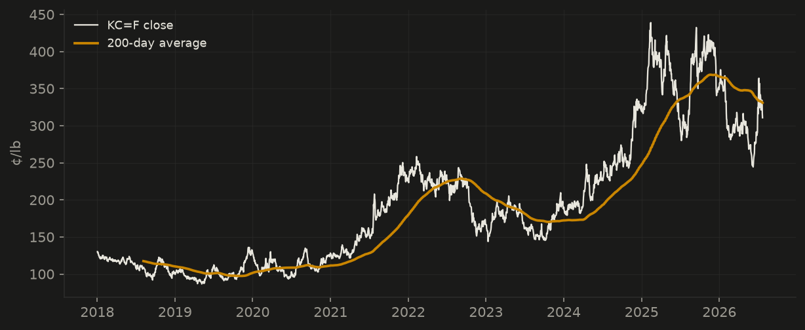
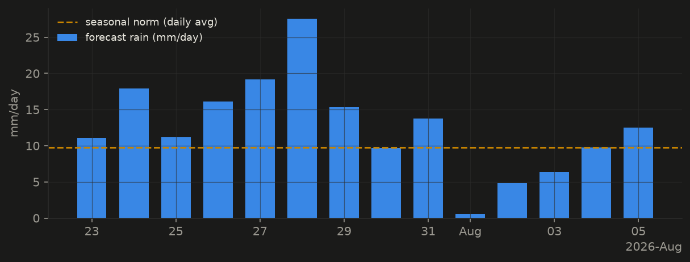
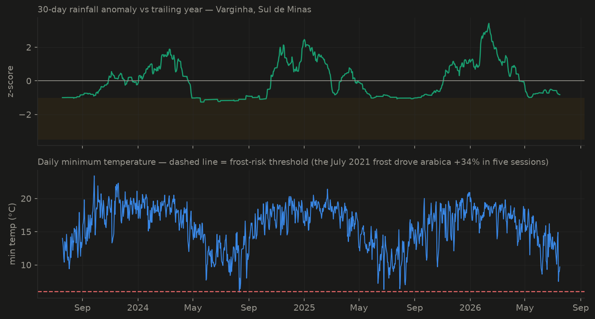
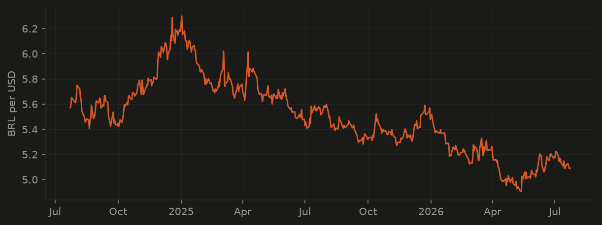
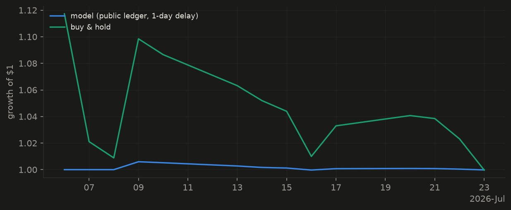

Robusta Coffee Monitor
A model-driven read on coffee markets and the Vietnamese crop: market regime from a hidden-Markov engine, rainfall anomalies in the Central Highlands robusta belt, and producer-currency pressure from the Brazilian real. Rebuilt daily; everything open source.
Coffee futures closed at 311¢/lb — down 3.3% on the week and up 7.9% on the month. The regime model reads the market as late-cycle (selective posture) and has for 13 sessions. Growing conditions look unremarkable: Central Highlands rainfall is near its seasonal norm (+0.3σ). The crop is in its fruit filling window, and stage-weighted stress is low. A strengthening Brazilian real (-2.1% in a month) squeezes producer margins — supportive for prices. Looking ahead: the 14-day forecast calls for 176 mm of rain in the robusta belt against a 137 mm seasonal norm (+0.6σ) — projected crop stress: low (Open-Meteo forecast model, issued 2026-07-23; skill scored publicly as windows close).
Market regime
price data through 2026-07-23

The long view
full price history through 2026-07-23

Growing conditions — Central Highlands, Vietnam
weather data through 2026-07-17 · Buon Ma Thuot, Dak Lak (12.68 N, 108.04 E) · 3% of the last 30 days near-rainless
crop stage: fruit filling · stage-weighted stress: low (0.03) — peak monsoon: moisture normally ample, so a deficit is unusual but damaging

The next two weeks
Open-Meteo forecast model · issued 2026-07-23 · window 2026-07-23 → 2026-08-05 · crop stage: fruit filling
176 mm expected vs 137 mm seasonal norm (+0.6σ) — projected stress: low

Growing conditions — Sul de Minas, Brazil
weather data through 2026-07-17 · Varginha, Minas Gerais (−21.55, −45.43) · the arabica side of the market

Currency driver — the Brazilian real
FX data through 2026-07-23

The ledger — the model in public
Every weekday the pipeline writes down what the model believes — regime call and target exposure — before the outcome is known, and commits it to the repository. Entries are never edited or deleted; scoring uses only the prices recorded in the ledger itself, with a 1-day execution delay. If the model is wrong, this section says so forever.
16 entries · 14 scored days (2026-06-25 → 2026-07-23) · model -0.02% vs buy-and-hold -0.03% · mean exposure 0.04

Forecast verification
16 rainfall forecasts issued and committed; 1 windows closed. First scored table appears after 5 closed windows. Inspect the raw snapshots.
Data & API
Organizations and builders can consume this monitor programmatically — everything below is regenerated with each daily run, versioned, and free under CC BY 4.0 (attribution required). Derived series only: regime labels, risk multipliers and weather anomalies computed by this project.
api/latest.json— today's regime, posture, exposure guide, growing-condition anomalies, and the daily brief (stable schema, versioned).api/history.csv— the full daily history of regime labels, risk multipliers and rainfall anomalies.feed.xml— the daily brief as RSS.api/changes.json— state changes only (regime flips, stress-band crossings) — poll this on your schedule instead of scraping the page.alerts.xml— the same changes as an RSS feed: fires only when something moved (pairs well with any RSS-to-email bridge).brief/latest.html— the week on one printable page (Cmd/Ctrl+P → PDF); Friday editions are archived by date.- the public ledger — the model's append-only, scoreable track record.
Using this in your shop or newsletter? Open an issue or email — custom growing regions can be added on request.
Research
The question behind this page — do growing-region weather anomalies actually predict coffee futures returns? — is tested properly in the project's working paper: an event study with a-priori definitions, permutation inference, and a built-in placebo structure (each region's weather vs the other region's crop). Headline: Brazilian dry spells precede arabica rallies with the right sign at every horizon (+5.1pp over 5 days, n=4, uncorrected p=0.04); the placebo is null; the Vietnam→robusta test is still data-limited — and the famous 2021 frost exposed a real flaw in threshold-based event definitions.
Methods, honestly
This monitor is the public face of an open research project: a single-instrument port of a multi-agent equity platform, rebuilt for agricultural markets.
- Regime: 3-state Gaussian HMM on trailing price, BRL/USD and weather features; entropy filter, asymmetric hysteresis, and a rule-based crisis override.
- Weather: Open-Meteo daily observations at Buon Ma Thuot, z-scored against their own trailing year (causal — no future data).
- Everything above is descriptive. The project's own walk-forward backtest of a trading strategy on these signals is deliberately published with its unflattering result (negative walk-forward efficiency) — the point is evaluation machinery that makes lying to yourself hard.
- Code, tests (120), and the full backtest notebook: github.com/ScottDongKhang/ascent-agri.